Getting Started
In this blog we are going to learn how to implement Naive Bayes Classifier on text from scratch without using library Naive bayes classifier. For this task we are going to use the dataset of Ford Sentence Classification Dataset which we have taken from kaggle.
Dataset
I have used python3 to implement the model.I first downloaded the Ford Sentence Classification dataset consisting of New_Sentences with their corresponding labels from kaggle and placed this dataset in my github repository.Then I extracted this data from my repository using the below code.
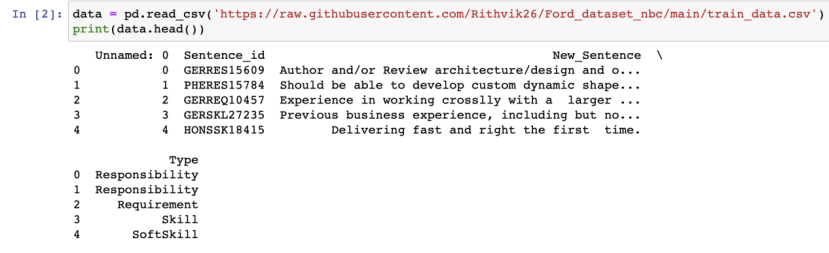Libraries
Firstly, before we start working on the dataset, we are going to import required libraries as shown in the below code snippet:
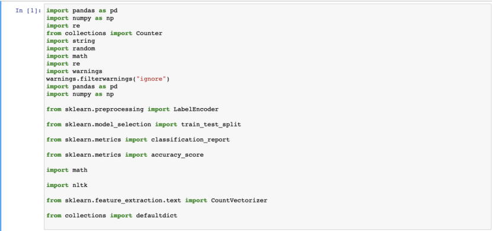Data Preprocessing
Removing Tags
As the first step of the data preprocessing, we are going to remove the HTML tags, URLs and non-alphanumeric characters from the text in New_Sentence column of the data. After removal of the above tags we will be removing the stopwords.
Before getting into the code for removing tags and stopwords let us learn what are stopwords.
What are Stop words
Stopwords are any words that do not significantly add to the meaning of a phrase. They can be safely ignored without affecting the sentence's meaning. These are some of the most popular short function words for some search engines, along with the, is, at, which, and on. Stop words might be problematic in this situation when looking for phrases that contain them, especially in names like "The Who" or "Take That."
When to remove stop words?
Stop words should be eliminated from our corpus when performing text classification or sentiment analysis because they don't add any useful information to our models, however stop words are helpful when performing.
Using the below code snippet we will remove the tags and stop words.
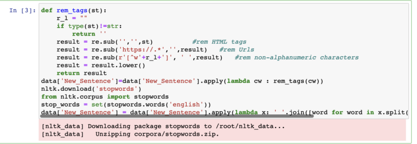Lemmatization
[2]Lemmatization is substantially more computationally expensive than stemming because it is not a ruled-based operation. Knowing the part of speech of tokens like "verb," "adverb," and "noun" is necessary for lemmatization.With the Natural Language Tool Kit (NLTK), the "WordNetLemmatizer()" method should be used to accomplish lemmatization.
A word will be lemmatized using the "Nltk.stem.WordNetLemmatizer.lemmatize" technique according to its context and placement in the sentence. This can be seen from the below code snippet
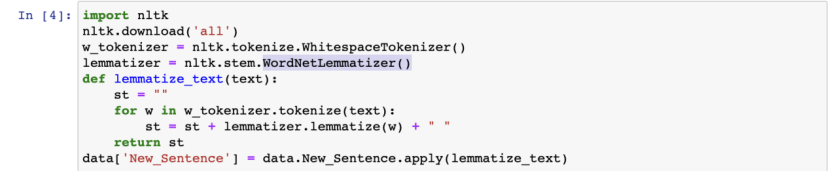Encoding the Labels
Here using the LabelEncoder() we are encoding the "Type" column which contains the 5 types of labels namely [“Responsibility”,”Skill”,”SoftSkill”,”Requirement”,”Experience”] respectively with [0,1,2,3,4,5] for each record using the below code snippet. By Encoding the labels in this way will help us in the future for our Naive Bayes Classification.
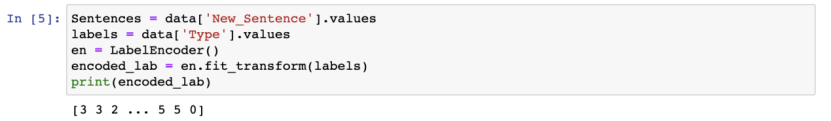My Contribution
Train-Development-Test Data Split
Data is split into train,development and test sets. I made the decision to divide them in the ratio of 6:2:2 using the below code snippet.
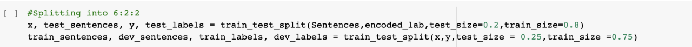The total number of Training Examples and Labels are shown from using the below code snippet.
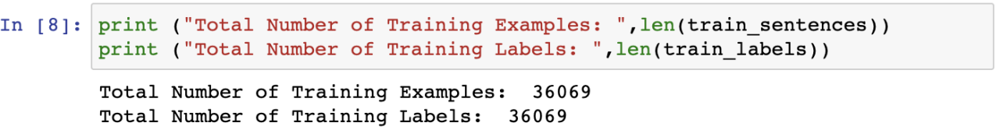The total number of Development Examples and Labels are shown from using the below code snippet.
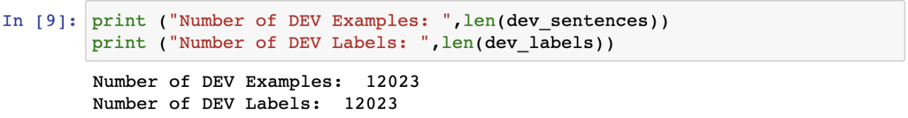The total number of Test Examples and Labels are shown from using the below code snippet.
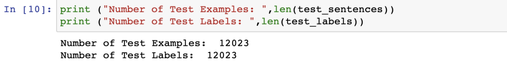Word Counts
First, we are going to use CountVectorizer to convert a text into a vector based on the number of times each word appears in the text as a whole. When we have several of these texts and want to turn each word into a vector, this is useful. We get the vocab from feature names picked from the raw documents using the "get feature names()" function.
Finally, I have created a count_words function which return the word_counts based on the training sentences and labels as shown in the below code snippet.
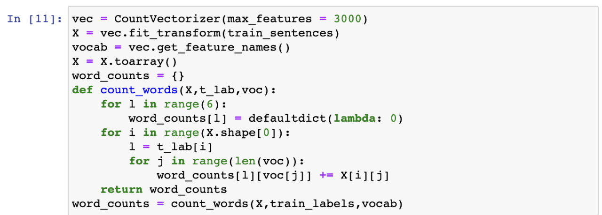Before getting started on implementing the Naive Bayes Classifier let us learn few things about Naive Bayes Classifier.
Naive Bayes Classifier:
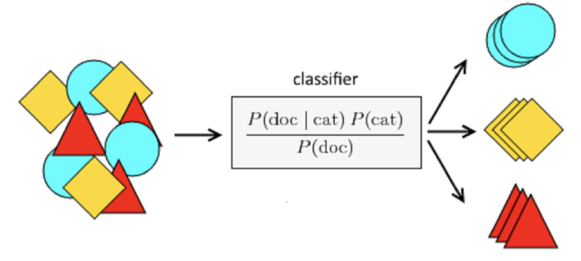 [3]JaganDeep Singh : Naive bayes classification[https://jagan-singhh.medium.com/naive-bayes-classifier-99e3e618f8db]The Bayes theorem is used in the Naive Bayes Classifier, a classification algorithm. It does NLP tasks like sentimental analysis with excellent results. A quick and simple classification algorithm is used. The application of this algorithm in NLP is extremely common.
Bayes Theorem
A rational method for determining a conditional probability is the Bayes Theorem. The likelihood that something will happen provided that something else has already happened is known as the conditional probability. We can determine the likelihood that an event will occur given the information of a prior event by utilizing conditional probability.
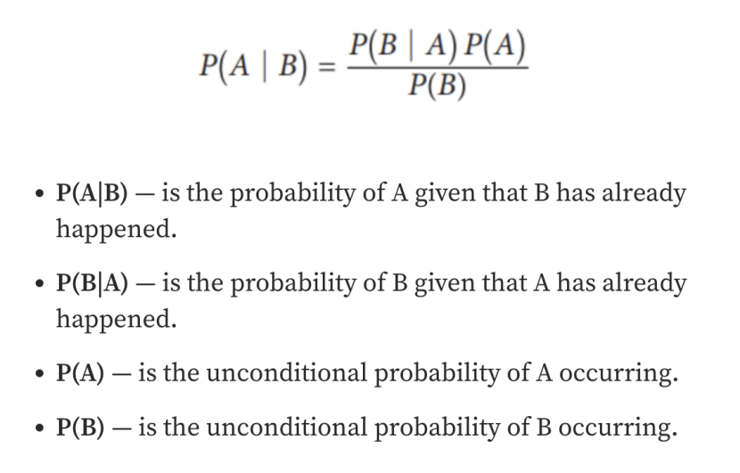Naive Bayes
Given the values of the features, the aim in the supervised learning method naive bayes for classification is to determine the class of the observation (data point). A naive bayes classifier (p(yi | x1, x2,..., xn)) determines the likelihood of a class given a set of feature values.
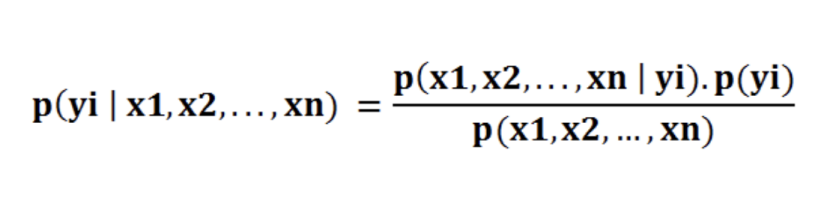The probability of an occurrence is determined by the Naive Bayes classifier in the following ways:
Step 1: determine the prior probability for the specified class labels. Step 2: Calculate the likelihood probability for each class given each attribute. Step 3: Apply the Bayes formula to these values to determine the posterior probability. Step 4: Determine which class, given that the input belongs to the higher probability class, has a greater likelihood.
Naive Bayes Implementation from Scratch
I have created a class called NaiveBayes from scratch as shown in the below code snippet.
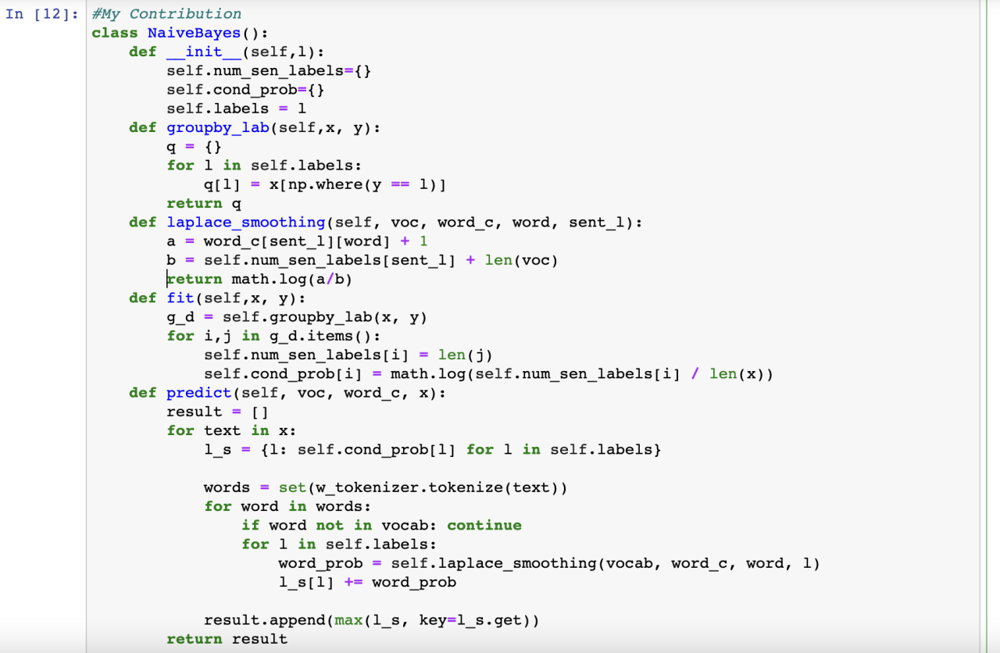def __init__(self,l):
The __init__ function is the constructor of this Naive Bayes Classifier which accepts the number of unique labels for this classification.
def groupby_lab(self,x,y):
The groupby_lab is the function that is used to group the New_Sentences by its labels.
def laplace_smoothing(self,voc,word_c,sent_l):
We are performing the laplace smoothing using the laplace_smoothing function.
What is laplace smoothing?
Laplace smoothing is a smoothing method that addresses the Naive Bayes issue of zero probability. Laplace smoothing allows us to depict P(w'|positive) as
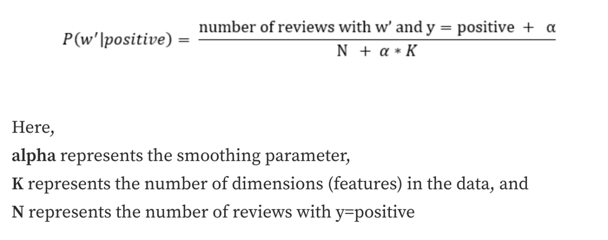 [1]Vaibhav Jayswal: Laplace smoothing in Naïve Bayes algorithm [https://towardsdatascience.com/laplace-smoothing-in-na%C3%AFve-bayes-algorithm-9c237a8bdece]def fit(self,x,y):
The "fit" function takes x (New_Sentences) and y (labels) values to be fitted on and stores the number of New_Sentences with each label and the conditional probabilities. We are taking the help of groupby_lab function in the fit method.
def predict(self,voc,word_c,x):
The "predict" function is written which returns predictions on unseen test sentences. As you can see in the predict function we are applying the laplace smoothing on each word before storing its final conditional word probability in each sentence.
Creating a model
Next, I have created a model of Naive Bayes and fitted the model on the train_sentences using the below code Snippet. And, Initially I have made predictions on the development dataset as shown below.I have achieved an accuracy of 26% on the test dataset.
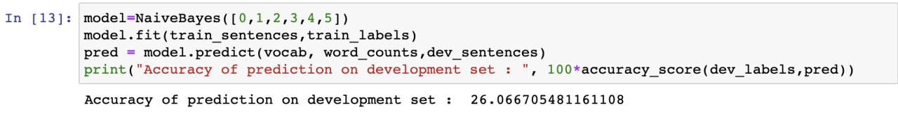Testing the Model on Test Data
Finally, I have taken my trained model and tested it using the test_sentences as shown in the below code snippet. I have achieved an accuracy of 25% on the test dataset.
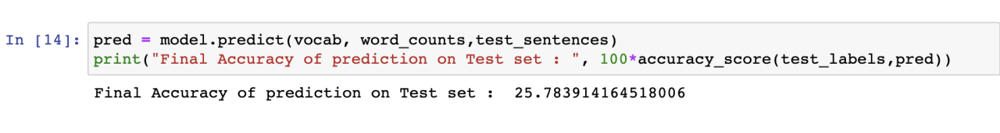References
- [1]Vaibhav Jayswal : Laplace smoothing in Naïve Bayes algorithm [https://towardsdatascience.com/laplace-smoothing-in-na%C3%AFve-bayes-algorithm-9c237a8bdece]
- [2]GeeksforGeeks :Using CountVectorizer to Extracting Features from Tex [https://www.geeksforgeeks.org/using-countvectorizer-to-extracting-features-from-text/]
- [3]JaganDeep Singh : Naive bayes classification[https://jagan-singhh.medium.com/naive-bayes-classifier-99e3e618f8db]
- [4]Ford Sentence Classification Dataset : [https://www.kaggle.com/datasets/gaveshjain/ford-sentence-classifiaction-dataset?resource=download&select=test_data.csv]